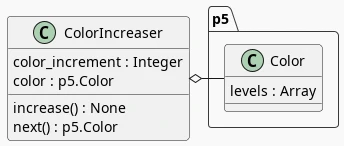

Testing P5 with Mocha and Chai
Table of Contents
- What This Is
- Setting Up the Tests
- The Whole Code Module
- Channel Constants
- Testing and Implementing the Color Increaser
- Mock Color
- Setting Up the Tests
- Does the ColorIncreaser Exist?
- The ColorIncreaser Class
- Does it take an increment amount?
- Does it take a color?
- The Increaser
- Does it wrap red back to 255 when it hits 256?
- Does Green Wrap Too?
- Does Blue Wrap Too?
- The Next Method
- Does next return the color?
- Export the Color Increaser
- Running The tests
- The Sketch
- The End
- Sources
What This Is
This is a walk-through of the test-driven development example on the p5js site. The color changing square above is created by exhaustively stepping through the RGB values for a p5 color. The site documentation doesn't seem to tell you the name of the color array attribute so you can access it, instead it tells you to use setter methods, but the tutorial indicates that the array is stored as an attribute of the color object named levels so we'll be working with that to change the colors.
Setting Up the Tests
Running the Tests
To run the tests I'll use three things:
- mocha: the framework to define the tests
- nodemon: a program that watches our code and re-runs mocha if something changes
- npm: the node-package-manager which will run nodemon to run mocha
npm comes with and works with node so I guess we really need four things.
To run the tests I created a package.json file which points to the folder with the test code in it (or any folder next to the package.json file whose name starts with test).
{
"scripts": {
"test": "nodemon --watch . --exec 'mocha ./test* || true'"
}
}
Weirdly, the mocha Getting Started documentation has an example package.json snippet to run mocha which doesn't put curly braces outside of the "scripts" attribute, but this will cause npm to throw an error saying that it isn't valid JSON. Maybe they figure you'd just know it. Or maybe they expect that you'd install mocha locally so there'd be an existing package.json that you just have to edit. Anyway, to run the tests I go into the folder above the test-folder and run npm like this:
npm test
Writing the Test File
Put It In Strict Mode
Javascript can be pretty lenient about letting what might be considered mistakes pass through without raising an error. I'll put the test-code into Strict Mode, making our mistakes more evident, hopefully, by putting this line at the top of the test.js file:
"use strict";
Import Chai and Sinon
I'm going to use the Behavior-Driven Development (BDD) version of Chai to make our assertions about what we expect the code to be doing.
const expect = require("chai").expect;
I'm also going to stub some methods using sinon.
const sinon = require("sinon");
Note: I originally had the ColorIncreaser class that I'm going to test in the same file as the sketch which caused an error because the sketch refers to a p5 object that gets pulled in from a CDN by an HTML tag. I later decided to move it into its own file so there's no longer a need to mock p5, but if you ever need to do it you can add this line before importing anything from the sketch file:
global.p5 = sinon.stub();
Import the Color Increaser Class
We're going to create a ColorIncreaser class which we need to import into the test code. Our import is going to look a little funky, though, because the sketch is in a folder created for this post.
files/posts/bdd-testing-p5/
But the test-code is in a different folder.
tests/mocha-tests/test-bdd-testing-p5/
This folder sits next to the files folder. So our test code has to go up two levels and then back down into the files to get the sketch code.
const ColorIncreaser = require('../../../files/posts/bdd-testing-p5/color-increaser');
Note that the path is relative to where the javascript file with the tests is, not where I'm running mocha. Also, although it looks like a file reference, the file is called color-increaser.js, but we're treating it as a module so we don't put the file extension on it.
Also, in order to be able to import the class we need to set it as exportable in the file where the class is defined - but I'll show that after the class is defined.
The Whole Code Module
Since this is about coding test-driven I'm going to show the tests and then the implementation that gets written to pass the test. This makes it kind of disorienting to read so I thought I'd show the entire color-increaser.js file that's being created here exactly as it ends up once it's all done.
const CHANNELS = {
RED: 0,
GREEN: 1,
BLUE: 2,
ALPHA: 3,
MAXIMUM: 255,
MINIMUM: 0
};
class ColorIncreaser {
constructor(color_increment, color) {
this.color_increment = color_increment;
this.color = color;
}// end constructor
increase() {
this.color.levels[CHANNELS.RED] += this.color_increment;
if (this.color.levels[CHANNELS.RED] > CHANNELS.MAXIMUM) {
this.color.levels[CHANNELS.RED] = CHANNELS.MINIMUM;
this.color.levels[CHANNELS.GREEN] += this.color_increment;
};
if (this.color.levels[CHANNELS.GREEN] > CHANNELS.MAXIMUM) {
this.color.levels[CHANNELS.GREEN] = CHANNELS.MINIMUM;
this.color.levels[CHANNELS.BLUE] += this.color_increment;
};
if (this.color.levels[CHANNELS.BLUE] > CHANNELS.MAXIMUM) {
this.color.levels[CHANNELS.BLUE] = CHANNELS.MINIMUM;
};
} // end increase
next() {
this.increase();
return this.color;
}; //end next
}; // end ColorIncreaser
if (typeof module != "undefined") {
module.exports = ColorIncreaser;
};
Channel Constants
I have a tendency to flip values around (sometimes it seems like blue should come before green, for example) so I like to create objects to hold values that get used repeatedly. This at the top of the same module as the Color Increaser class.
const CHANNELS = {
RED: 0,
GREEN: 1,
BLUE: 2,
ALPHA: 3,
MAXIMUM: 255,
MINIMUM: 0
};
Testing and Implementing the Color Increaser
Now we'll write the tests and implement the ColorIncreaser class along with it.
Mock Color
We don't want to use any p5 objects in the testing so we'll make a fake color object, implementing its undocumented (as far as I can tell) levels attribute as an Array.
class MockColor {
constructor(red, green, blue, alpha){
this.levels = [
red,
green,
blue,
alpha
]
} // end constructor
}// end mock_color
Setting Up the Tests
mocha's describe function acts like a header around our tests. Within it I'm setting some constants and also defining a beforeEach function which will create a new ColorIncreaser object before running each test so it won't have any changes we make in the other tests spilling over. Although I could import the CHANNELS object with the constants I thought it'd be a better check to create a new set to double-check what's going on in the code being tested.
describe('Given the ColorIncreaser class definition', function() {
const [RGB_MIN, RGB_MAX ]= [0, 255];
const [RED, GREEN, BLUE, ALPHA] = [0, 1, 2, 3];
const CHANNELS = [RED, GREEN, BLUE, ALPHA];
const COLOR_INCREMENT = 1;
let color_increaser;
let color_mock;
beforeEach(function() {
color_mock = new MockColor(RGB_MIN, RGB_MIN,
RGB_MIN, RGB_MAX);
color_increaser = new ColorIncreaser(COLOR_INCREMENT,
color_mock);
});
Does the ColorIncreaser Exist?
Our first test makes sure that we were able to create the ColorIncreaser object. This is actually a little bit of a fake because the beforeEach will fail if we can't create the object and it won't actually reach this test. I suppose you could still break it by making a function named ColorIncreaser instead of a class so this acts as an extra check.
First we make a section header to make it a little clearer (it doesn't actually affect the tests, just the output after the test is run).
describe("When the ColorIncreaser is constructed",
function() {
And then the actual test to see if the constructor created an object.
it ("Then it should be an object", function(done) {
expect(color_increaser).to.be.a('object');
done();
});
Mocha will run the tests asynchronously (parallel and out of order) so we need to accept the done function and then call it when the test is finished so mocha knows that the test is done.
The ColorIncreaser Class
Now that we have the test I'll define the class and its constructor. It's a pretty basic class, here's a class diagram of its attributes.

And here's the class and constructor definition.
class ColorIncreaser {
constructor(color_increment, color) {
this.color_increment = color_increment;
this.color = color;
}// end constructor
Does it take an increment amount?
This is just a sanity check to make sure that the constructor actually saved the increment amount we passed in.
it("And it should set the color_increment",
function(done){
expect(color_increaser.color_increment).to.equal(COLOR_INCREMENT);
done();
});
Does it take a color?
This is another check to make sure the constructor saved the color object that got passed in. I couldn't find a same-object checker in chai but the eql is described as a check that the objects are "deeply-equal" which I assume is the same thing.
it("And set the color attribute",
function(done){
expect(color_increaser.color).to.be.eql(color_mock);
done();
});
The Increaser
We're going to implement a method for the ColorIncreaser that will increment the color-array so let's check that it works. It sort of treats the three color channels (Red, Green, and Blue… we'll pretend Alpha doesn't exist) like a three-digit number using base 255 instead of 10 and with the digits being BGR. So we start with all three channels at 0, then we increment red from 0 to 255 and when it hits 256 we set it back to 0 and set green to 1, then we repeat this over and over until green goes up to 256 at which point we reset both red and green to 0 and set blue to 1 and so on.
I'll add a describe section to the tests to make it clearer where testing this method starts.
describe("And when the increase() method is called", function() {
Does the red channel increase?
Until it increments the red channel past 255 the other channels don't change so we'll first test that only the red channel changes up until that point.
it ("Then it should increment red up until 255",
function(done){
for (let count=RGB_MIN; count < RGB_MAX; count +=1) {
color_increaser.increase();
}
let expected = [RGB_MAX, RGB_MIN, RGB_MIN, RGB_MAX]
CHANNELS.forEach((channel, index) => expect(
color_increaser.color.levels[channel]).to.equal(expected[index]));
done();
});
The Color-Increaser Method
So now I'll add the increase method to the ColorIncreaser class which adds the color_increment to the red-channel when it's called.
increase() {
this.color.levels[CHANNELS.RED] += this.color_increment;
Does it wrap red back to 255 when it hits 256?
The channels can only go up to 255 so once we hit 256:
- red wraps back to 0
- green increments one
The tutorial uses for-loops to actually step through and increment the color until it passes the limit but I'll cheat and just set the red-channel to the limit and then increment it.
These are our expected values before and after the call to increase.
| Channel | Before Increase | After Increase |
|---|---|---|
| Red | 255 | 0 |
| Green | 0 | 1 |
| Blue | 0 | 0 |
| Alpha | 255 | 255 |
it ("But red should wrap-around to 0 when it hits 256 and increment green",
function(done) {
color_increaser.color.levels[RED] = RGB_MAX;
color_increaser.increase();
let expected = [RGB_MIN, COLOR_INCREMENT,
RGB_MIN, RGB_MAX];
CHANNELS.forEach((channel, index) => expect(
color_increaser.color.levels[channel]).to.equal(expected[index]));
done();
});
The Wrap-Red Conditional
Within the increase method we add this little chunk after incrementing the red channel.
if (this.color.levels[CHANNELS.RED] > CHANNELS.MAXIMUM) {
this.color.levels[CHANNELS.RED] = CHANNELS.MINIMUM;
this.color.levels[CHANNELS.GREEN] += this.color_increment;
};
Does Green Wrap Too?
As with red, the green channel can only go up to 255 so once we increase green to 256:
- wrap green back to 0
- increment blue
Also, since we only increment green if red hits 256 it wraps back to 0 too. Once again, I'm forgoing looping and incrementing and instead just setting the red and green channels to their limits and then calling increase.
These are our expected values before and after the call to increase.
| Channel | Before Increase | After Increase |
|---|---|---|
| Red | 255 | 0 |
| Green | 255 | 0 |
| Blue | 0 | 1 |
| Alpha | 255 | 255 |
it("And it should wrap-around green and increase blue if green exceeds 255",
function(done) {
color_increaser.color.levels[RED] = RGB_MAX;
color_increaser.color.levels[GREEN] = RGB_MAX;
color_increaser.increase();
let expected = [RGB_MIN, RGB_MIN,
COLOR_INCREMENT, RGB_MAX];
CHANNELS.forEach((channel, index) => expect(
color_increaser.color.levels[channel]).to.equal(
expected[index]));
done();
});
The Wrap-Green Conditional
Now within the increase method we add this little chunk after incrementing the red channel to check the green channel.
if (this.color.levels[CHANNELS.GREEN] > CHANNELS.MAXIMUM) {
this.color.levels[CHANNELS.GREEN] = CHANNELS.MINIMUM;
this.color.levels[CHANNELS.BLUE] += this.color_increment;
};
Does Blue Wrap Too?
As with red and green, the blue channel can only go up to 255 so once we increase blue to 256:
- wrap all three channels back to 0
These are our expected values before and after the call to increase.
| Channel | Before Increase | After Increase |
|---|---|---|
| Red | 255 | 0 |
| Green | 255 | 0 |
| Blue | 255 | 0 |
| Alpha | 255 | 255 |
it("And it should wrap-around all colors when blue exceeds 255",
function(done) {
CHANNELS.forEach(
channel => color_increaser.color.levels[channel] = RGB_MAX);
color_increaser.increase();
let expected = [RGB_MIN, RGB_MIN, RGB_MIN,
RGB_MAX];
CHANNELS.forEach((channel, index) => expect(
color_increaser.color.levels[channel]).to.equal(
expected[index]));
done();
});
The Wrap-Blue Conditional
I originally just used a modulus to keep blue within range, but since we're allowing the user to change the increment this might not always go back to zero so here's the conditional that resets the blue channel if it exceeds the limit.
if (this.color.levels[CHANNELS.BLUE] > CHANNELS.MAXIMUM) {
this.color.levels[CHANNELS.BLUE] = CHANNELS.MINIMUM;
};
And there we have our exhaustive channel incrementer.
The Next Method
I'm going to implement a next method to simplify things a little. It'll call increase and the return the color object. Just because.
describe("And when the next() method is called", function() {
Does the next method increase the color?
To check that next calls the increase method I'll monkey-patch it with a sinon spy and check that when we call next the increase spy gets called.
it("Then it should increase the color",
function(done) {
let spy = sinon.spy(color_increaser, "increase");
color_increaser.next();
expect(spy.calledOnce).to.be.true;
spy.restore();
done();
});
The Next Method
Now I'll implement the next method and have it call the increase method.
next() {
this.increase();
Does next return the color?
Instead of requiring the user to make two calls I'll have the next method return the color object directly.
it ("And return the color",
function(done) {
let actual = color_increaser.next();
expect(color_increaser.color).to.be.eql(actual);
done();
});
Return the color
Now in our ColorIncreaser.next method we return the color.
return this.color;
Export the Color Increaser
The implementation so far is good enough to get the code working within the p5 sketch, which would normally be the ultimate goal. But in order for the test code to be able to import the ColorIncreaser (using the require function) we need to add a line in the file with the ColorIncreaser definition to export it.
The code given in the tutorial just has the export line, but this will raise an error outside of node.js - so it works for testing but causes a ReferenceError in the browser (when using a python-based server anyway) so to prevent that from happening I added a check that will do the export only if the module is defined, which is an indication that this is being used in node (or I messed up and defined it somewhere else).
if (typeof module != "undefined") {
module.exports = ColorIncreaser;
};
Running The tests
Now, let's see what it looks like when we run the tests.
mocha ../tests/test*
Given the ColorIncreaser class definition
When the ColorIncreaser is constructed
✔ Then it should be an object
✔ And it should set the color_increment
✔ And set the color attribute
And when the increase() method is called
✔ Then it should increment red up until 255
✔ But red should wrap-around to 0 when it hits 256 and increment green
✔ And it should wrap-around green and increase blue if green exceeds 255
✔ And it should wrap-around all colors when blue exceeds 255
And when the next() method is called
✔ Then it should increase the color
✔ And return the color
9 passing (11ms)
The output in the terminal has some color added to the text so it looks prettier, but otherwise that's the output of running our tests.
The Sketch
Now that we have the ColorIncreaser we can add it to a sketch to change the colors of the square that we're drawing.
The Sketch Function
As I noted before, I'm using the instance-mode syntax for the sketch so this is the function that holds the setup and draw functions.
function flashing_square(p5js) {
const SIZE = 500;
let color_increaser;
The setup Function
The setup creates the canvas and color increaser instance.
p5js.setup = function() {
p5js.createCanvas(SIZE, SIZE);
color_increaser = new ColorIncreaser(
1,
p5js.color(
CHANNELS.MINIMUM,
CHANNELS.MINIMUM,
CHANNELS.MINIMUM,
CHANNELS.MAXIMUM));
p5js.background(color_increaser.color);
};
The draw Function
The draw sets the background color and increases its value once per frame.
p5js.draw = function() {
p5js.background(color_increaser.next());
};
The End
So, there you go. The sketch wasn't so exciting, but the main value in going through the exercise, I think, was being able to get the javascript testing infrastructure working and getting back into using chai and sinon and the crazy world of module imports in javascript.
Sources
- Behavior-driven development. In: Wikipedia [Internet]. 2023 [cited 2023 Jun 9]. Available from: https://en.wikipedia.org/w/index.php?title=Behavior-driven_development&oldid=1158619924
- Expect / Should - Chai [Internet]. [cited 2023 Jun 9]. Available from: https://www.chaijs.com/api/bdd/
- nodemon [Internet]. [cited 2023 Jun 9]. Available from: https://nodemon.io/
- Sinon.JS - Standalone test fakes, spies, stubs and mocks for JavaScript. Works with any unit testing framework. [Internet]. [cited 2023 Jun 9]. Available from: https://sinonjs.org/
- Unit Testing and Test Driven Development | p5.js [Internet]. [cited 2023 Jun 8]. Available from: https://p5js.org/learn/tdd.html